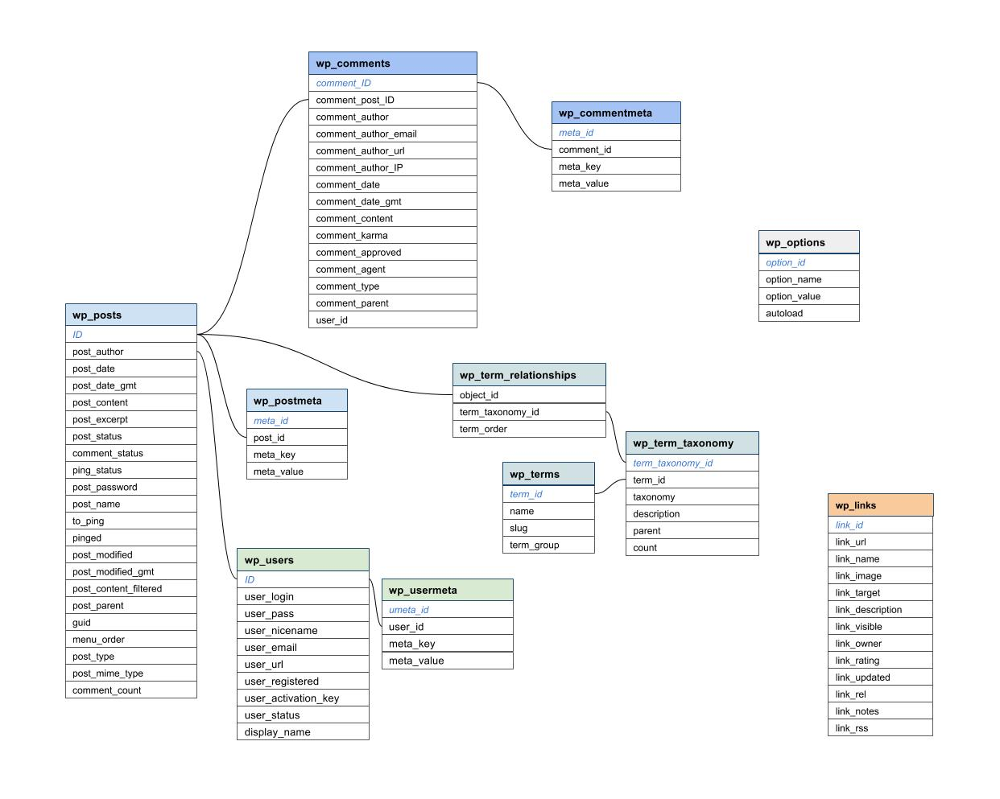
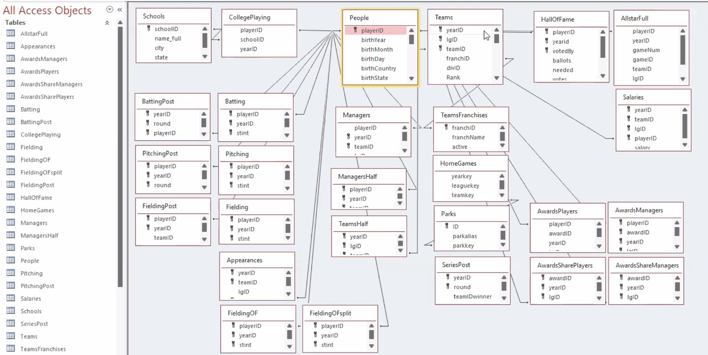

Databases and Basic SQL
We’ve seen the use of flat files to store data (delimited data files). These files often have a file extension of .csv, .txt, or .dat.
However, we often have multiple data sources around one problem. For instance, our Lahman package we’ve been using has information about Major League Baseball players’ batting, pitching, and personal information.
There are many data tables (essentially each could be a data frame). Below is information about the structure of these data tables and how they relate.
When we have multiple data sets (or sources) a database is often used along with a database management system (DBMS)
The data, the DBMS, and the applications associated with them are often simply called a database
Database - Organized Collection of Data
For most standard databases, we usually think of a bunch of 2D tables that are related by keys. We might refer to this as a relational database.
Consider the Lahman diagram:

Each rectangle represents one data table. We can see that the playerID variable is common across many of these tables. This is a variable that relates the tables to each other. A common task is then to combine separate data tables in order to do an analysis.
Currently, the Lahman data sets are not in a data base. They are simply stored in our package. We can put them into a database for some practice!
Databases Systems
There are many common types of relational databases management systems (RDBMS). Some of the more popular database types are:
Most of these RDBMS have their own Structured Query Language (SQL) that provides a language for getting information from tables in the database. The SQL languages have the same core functionality and syntax that is vital to learn as a data scientist!
Actions on Databases
There are a few common actions we often want to perform on a database (CRUD actions):
- Create data (add rows or a table to the database)
- Read data (return data from a table in the database)
- Update data
- Delete data
- Plus: Provide access control, monitoring, tuning, and backup/recovery
The SQL code allows us to do these operations. Luckily, the logic for doing the querying is shared with the actions we do in dplyr! We’ll be able to query databases using dplyr commands and compare that to the equivalent SQL commands. The big idea is to get the logic down. Once you have that, it is just learning the syntax.
Databases in R: Connecting
The first step in dealing with a database is to connect yourR session to it so you can do your CRUD actions. To connect we use the DBI package. The dbConnect() function allows us to connect to a database. Here is some generic code for using that function:
library(DBI)
con <- dbConnect(data_base_type_goes_here_usually_requires_a_package,
host = "hostname.website",
user = "username",
password = rstudioapi::askForPassword("DB password")
)This code tellsR where the connection exists (host) and, if you need to login to gain access, the way in which you could specify your username and password.
The first argument specifies the type of database you are connecting to. Most commonly you’ll need to download an appropriate package and put something like the following:
RSQLite::SQLite()for RSQLite
RMySQL::MySQL()for RMySQL
RPostgreSQL::PostgreSQL()for RPostgreSQL
odbc::odbc()for Open Database Connectivity
bigrquery::bigquery()for google’s bigQuery
Databases in R: Querying a Table
Once connect, you can use tbl() to reference a table in the database. Notice our first argument is the connection we made above.
new_data <- tbl(con, "name_of_table")We can then use SQL code or dplyr code (which actually calls code from a package called dbplyr) to query things.
Databases in R: Ending Your Connection
When done working, it is good practice to disconnect from the database via the dbDisconnect() function.
dbDisconnect(con)Databases Example
A Lahman RSQLite exists at https://www4.stat.ncsu.edu/~online/datasets/lahman.db. We’ll do some practice with this! Make sure you install the RSQLite package if you don’t have that already.
You’ll need to download the .db file and place it in a place you know (perhaps your project directory or the directory your .qmd file lives in.)
Then you can run this code to connect to the database!
library(DBI)
con <- dbConnect(RSQLite::SQLite(), "data/lahman.db")First, let’s list out the tables with DBI::dbListTables()
dbListTables(con) [1] "AllstarFull" "Appearances" "AwardsManagers"
[4] "AwardsPlayers" "AwardsShareManagers" "AwardsSharePlayers"
[7] "Batting" "BattingPost" "CollegePlaying"
[10] "Fielding" "FieldingOF" "FieldingOFsplit"
[13] "FieldingPost" "HallOfFame" "HomeGames"
[16] "LahmanData" "Managers" "ManagersHalf"
[19] "Parks" "People" "Pitching"
[22] "PitchingPost" "Salaries" "Schools"
[25] "SeriesPost" "Teams" "TeamsFranchises"
[28] "TeamsHalf" "battingLabels" "fieldingLabels"
[31] "pitchingLabels" Great, now we can access one of these tables with the dplyr::tbl() function. From there, we can use all our usual dplyr code in place of SQL syntax!
library(dplyr)
Attaching package: 'dplyr'The following objects are masked from 'package:stats':
filter, lagThe following objects are masked from 'package:base':
intersect, setdiff, setequal, uniontbl(con, "Pitching")# Source: table<`Pitching`> [?? x 30]
# Database: sqlite 3.47.1 [C:\Users\esmeyer2\Documents\repos\ST-558-Data-Science-for-Statisticians\Notes\data\lahman.db]
playerID yearID stint teamID lgID W L G GS CG SHO SV
<chr> <int> <int> <chr> <chr> <int> <int> <int> <int> <int> <int> <int>
1 bechtge01 1871 1 PH1 NA 1 2 3 3 2 0 0
2 brainas01 1871 1 WS3 NA 12 15 30 30 30 0 0
3 fergubo01 1871 1 NY2 NA 0 0 1 0 0 0 0
4 fishech01 1871 1 RC1 NA 4 16 24 24 22 1 0
5 fleetfr01 1871 1 NY2 NA 0 1 1 1 1 0 0
6 flowedi01 1871 1 TRO NA 0 0 1 0 0 0 0
7 mackde01 1871 1 RC1 NA 0 1 3 1 1 0 0
8 mathebo01 1871 1 FW1 NA 6 11 19 19 19 1 0
9 mcbridi01 1871 1 PH1 NA 18 5 25 25 25 0 0
10 mcmuljo01 1871 1 TRO NA 12 15 29 29 28 0 0
# ℹ more rows
# ℹ 18 more variables: IPouts <int>, H <int>, ER <int>, HR <int>, BB <int>,
# SO <int>, BAOpp <dbl>, ERA <dbl>, IBB <int>, WP <int>, HBP <int>, BK <int>,
# BFP <int>, GF <int>, R <int>, SH <int>, SF <int>, GIDP <int>tbl(con, "Pitching") |>
select(ends_with("ID")) |>
filter(yearID == 2010) # Source: SQL [?? x 4]
# Database: sqlite 3.47.1 [C:\Users\esmeyer2\Documents\repos\ST-558-Data-Science-for-Statisticians\Notes\data\lahman.db]
playerID yearID teamID lgID
<chr> <int> <chr> <chr>
1 aardsda01 2010 SEA AL
2 abadfe01 2010 HOU NL
3 accarje01 2010 TOR AL
4 aceveal01 2010 NYA AL
5 acostma01 2010 NYN NL
6 adamsmi03 2010 SDN NL
7 affelje01 2010 SFN NL
8 albaljo01 2010 NYA AL
9 alberma01 2010 BAL AL
10 ambrihe01 2010 CLE AL
# ℹ more rowsNotice the number of rows isn’t actually calcuated here! This is called lazy evaluation. Until we store the result in an object or do some calculation that requires all of the rows, it won’t do the computation.
How dplry works with a database
It never pulls data into
Runless you explicitly ask for itIt delays doing any work until the last possible moment - it collects together everything you want to do and then sends it to the database in one step (you can add
collect()if you want all the data anyway)
tbl(con, "Pitching") |>
select(ends_with("ID")) |>
filter(yearID == 2010) |>
collect()# A tibble: 684 × 4
playerID yearID teamID lgID
<chr> <int> <chr> <chr>
1 aardsda01 2010 SEA AL
2 abadfe01 2010 HOU NL
3 accarje01 2010 TOR AL
4 aceveal01 2010 NYA AL
5 acostma01 2010 NYN NL
6 adamsmi03 2010 SDN NL
7 affelje01 2010 SFN NL
8 albaljo01 2010 NYA AL
9 alberma01 2010 BAL AL
10 ambrihe01 2010 CLE AL
# ℹ 674 more rowsWe can actually get out some SQL code from our dplyr code if we use show_query()
tbl(con, "Pitching") |>
select(ends_with("ID")) |>
filter(yearID == 2010) |>
show_query()<SQL>
SELECT `playerID`, `yearID`, `teamID`, `lgID`
FROM `Pitching`
WHERE (`yearID` = 2010.0)That’s cool! If you have the logic of dplyr down you can just use that but also learn SQL syntax along the way!
You can actually write straight SQL code as well (if you know that):
tbl(con, sql(
"SELECT `playerID`, `yearID`, `teamID`, `lgID`
FROM `Pitching`
WHERE (`yearID` = 2010.0)")
)# Source: SQL [?? x 4]
# Database: sqlite 3.47.1 [C:\Users\esmeyer2\Documents\repos\ST-558-Data-Science-for-Statisticians\Notes\data\lahman.db]
playerID yearID teamID lgID
<chr> <int> <chr> <chr>
1 aardsda01 2010 SEA AL
2 abadfe01 2010 HOU NL
3 accarje01 2010 TOR AL
4 aceveal01 2010 NYA AL
5 acostma01 2010 NYN NL
6 adamsmi03 2010 SDN NL
7 affelje01 2010 SFN NL
8 albaljo01 2010 NYA AL
9 alberma01 2010 BAL AL
10 ambrihe01 2010 CLE AL
# ℹ more rowsThere are a ton of online tutorials to learn SQL. It is highly recommended if you are looking for a job!
We’ll cover the basics of Joins (methods to combine more than one table (data frame)) shortly.
We should disconnect from our database now that we are done!
dbDisconnect(con)Quick R Video
Please pop this video out and watch it in the full panopto player!
Recap!
Databases are commonly used to store lots of data
- The data, the DBMS, and the applications associated with them are often simply called a database
Create data, Read data, Update data, Delete data (CRUD)
DBIpackage has functionality to connect to many types of databases in Rtbl()and commondplyrfunctions work for querying
Use the table of contents on the left or the arrows at the bottom of this page to navigate to the next learning material!